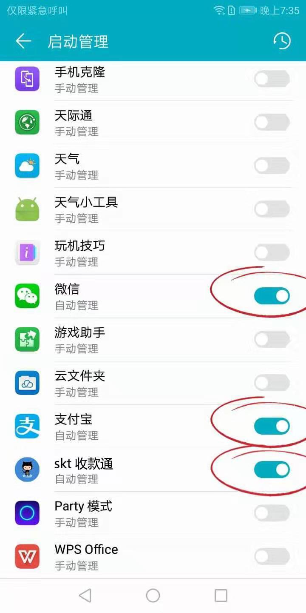

安装app
skt收款通安装好以后，必须开启相关权限，否则无法检测到支付通知。
小米手机配置 三星手机配置 华为手机配置 部分手机没有制作教程，请参考小米手机配置。
注意：修改手机这些设置的目的是为了在微信和支付宝收到款以后，在手机通知栏出现通知消息同时不让手机进入休眠和结束云闪付、微信、支付宝进程，这样才能保证正常收款。
注意：用于安装 skt收款通 的这个手机最好放在家里专用，并且一直连上充电线。
app配置
1.设置收款接受地址和token，token在自己的后台查看
2.配置完之后在测试输出中点击测试链接服务器，返回成功连接则表示正常可以使用
3.点击左上角的三道横线进入配置接受渠道，配置监听的收款应用，不需要监听的不要配置，推送也只推送配置的渠道
4.配置渠道参数，除支付宝转卡外配置参数如下，codeId为要监听的二维码，这个codeId在后台查看，pushMark为备注可任意填写，方便自己查看
5.支付宝转卡配置参数如下，phoneNumber为要监听的手机号，pushMark为备注
6.在推送记录里面可以查看推送的消息卡片，以及推送的状态，没有配置的渠道在此则不会显示该渠道的卡片选项
注意：一定要设置推送地址和token，否则无法推送，且要保持该应用一直运行状态，不要关闭，开启该应用的一切权限。
手机使用注意事项
1、关闭手机省电模式。
2、一定要将屏幕设置为常亮，将自动锁屏设置为永不关闭。
3、手机连接网络，保持手机处于充电状态，挂机即可。
4、在内存中锁住APP，不要被系统清理。启动APP。然后点击手机底部硬件按钮中的“设置”按钮，调起“一键清理”功能，按住图标向下拖拽，出现锁图标就可以把App锁住。
5、一定将应用的所有权限全部开启
云闪付特别说明（应该是云闪付的问题）
1、使用云闪付【监听通知】通知时，必须保证云闪付APP运行在最前面，在所有当前打开的应用的最前面！
2、如果你使用云闪付【监听通知】，请务必申请云闪付『商户通知码』，用该码来进行通知。
3、如果云闪付是安装在华为手机上请一定按照如下设置: 设置-> 应用 —> 权限管理 -> 点击右上角的三个点 -> 选择菜单中的特殊访问权限 -> 电池优化 -> 搜索找到云闪付 -> 点击选择不允许
小米手机MIUI配置
1. 开启 skt收款通 APP 通知读取权限
注意：必须开启 skt收款通 APP 的通知读取权限，否则无法读取支付通知。
安装 skt收款通 APP 后会自动跳转到通知设置页面，请找到「skt收款通 收款」，并勾选。
以后要开启，请在系统「设置」-「更多设置」-「系统安全」-「通知读取权限」勾选。
2. 关闭神隐模式 和 关闭休眠
在系统「设置」-「电量和性能」-「神隐模式」- 「应用配置」- 右上角三个点「关闭应用后台智能省电」。
在系统「设置」-「锁屏和密码」-「自动锁屏」- 选择「屏幕永不休眠」。
3. 开启 skt收款通收款、微信、支付宝 的开机自启权限
在系统「设置」-「授权管理」-「自启动管理」- 勾选 skt收款通收款、微信、支付宝 允许自启动。

4. 锁定 skt收款通收款、微信、支付宝 任务，不要被系统自动清理
打开三个应用，然后按 设置键 呼出任务管理，向下拉动应用，锁定应用。
5. 关闭 WLAN 优化
在系统「设置」-「WLAN」-「高级设置」- 关闭「WLAN优化」。
6. 开启 skt收款通收款、微信、支付宝 的全部推送通知
在系统「设置」-「通知和状态栏」-「通知管理」- 找到 skt收款通收款、微信、支付宝 开启所有通知。


7. 关闭 微信勿扰模式
在微信「设置」-「勿扰模式」- 关闭 勿扰模式。
注意：如果你在电脑上也登陆了这个收款微信号，请记得把手机静音取消，不然就收不到付款通知哦。
8. 开启 微信收款语音播报
在微信「我」-「钱包」-「收付款」- 「二维码收款」- 点击右上角三个点 开启收款到账语音提醒。
9. 开启 支付宝收付款消息提醒
在支付宝搜索「支付助手」- 点击支付助手右上角图标 - 开启 接收支付消息提醒。
10. 开启 分屏显示
微信不能切换到首页（聊天列表页）；如果手机支持分屏，建议把微信、支付宝显示到两个分屏，有助于即时收到微信支付宝到账推送，进程不被手机异常退出。
三星手机配置
1. 开启 skt收款通 APP 通知读取权限
注意：必须开启 skt收款通 APP 的通知读取权限，否则无法读取支付通知。
安装 skt收款通 APP 后会自动跳转到通知设置页面，请找到「skt收款通 收款」，并勾选。
以后要开启，请在系统「设置」-「锁定屏幕与安全」-「其他安全设置」-「高级设置」-「通知访问」勾选。
2. 关闭省电模式 和 关闭休眠
在系统「设置」-「常规设置」-「电池」- 「省电模式」- 点击关闭。
在系统「设置」-「显示」-「休眠」- 选择永不不要。
3. 开启 skt收款通收款、微信、支付宝 的开机自启权限
「智能管理器」-「应用程序管理」-「自启动应用程序」- 勾选 skt收款通收款、微信、支付宝 允许自启动。
4. 锁定 skt收款通收款、微信、支付宝 任务，不要被系统自动清理
打开三个应用，然后按 设置键 呼出任务管理，向下拉动应用，锁定应用。
5. 睡眠期间保持 WLAN 开启
在系统「设置」-「链接」-「WLAN」- 右上角「高级」- 「睡眠期间保持 WLAN 开启」。
6. 开启 skt收款通收款、微信、支付宝 的全部推送通知
在系统「设置」-「应用程序」- 找到 skt收款通收款、微信、支付宝 - 「通知」开启所有通知。
7. 关闭 微信勿扰模式
在微信「设置」-「勿扰模式」- 关闭 勿扰模式。
注意：如果你在电脑上也登陆了这个收款微信号，请记得把手机静音取消，不然就收不到付款通知哦。
8. 开启 微信收款语音播报
在微信「我」-「钱包」-「收付款」- 「二维码收款」- 点击右上角三个点 开启收款到账语音提醒。
9. 开启 支付宝收付款消息提醒
在支付宝搜索「支付助手」- 点击支付助手右上角图标 - 开启 接收支付消息提醒。
10. 开启 分屏显示
微信不能切换到首页（聊天列表页）；如果手机支持分屏，建议把微信、支付宝显示到两个分屏，有助于即时收到微信支付宝到账推送，进程不被手机异常退出。
华为手机配置
1. 开启 BufPay APP 通知读取权限
注意：必须开启 BufPay APP 的通知读取权限，否则无法读取支付通知。
安装 skt收款通 APP 后会自动跳转到通知设置页面，请找到「skt收款通 收款」，并勾选。
以后要开启，请在系统「设置」-「应用和通知」-「应用管理」- 底部「设置」-「特殊访问权限」-「通知使用权」勾选。
2. 关闭省电模式 和 关闭休眠
在系统「设置」-「电池」- 「省电模式」和「超级省电」- 点击关闭。
在系统「设置」-「显示」- 「休眠」- 点击永不（如果这里没有出现永不休眠选项，那么需要开启开发者模式才会出现这个选项，在关于手机里面，点击5次版本号即可开启）。
3. 开启 skt收款通收款、微信、支付宝 的开机自启权限
「设置」-「电池」-「启动管理」- 勾选 skt收款通收款、微信、支付宝 允许自启动。
4. 锁定 skt收款通收款、微信、支付宝 任务，不要被系统自动清理
打开三个应用，然后按 设置键 呼出任务管理，点击锁定图标，锁定应用。
5. 关闭 WLAN+ 和 开启休眠保存 WLAN 连接
在系统「设置」-「无线和网络」-「WLAN」- 「WLAN+」- 点击关闭。
在系统「设置」-「无线和网络」-「WLAN」- 底部「设置」- 「在休眠状态下保存 WLAN 连接」选择始终。
6. 开启 skt收款通收款、微信、支付宝 的全部推送通知
在系统「设置」-「应用和通知」- 「通知管理」- 找到 skt收款通收款、微信、支付宝 - 「通知」开启所有通知。
7. 关闭 微信勿扰模式
在微信「设置」-「勿扰模式」- 关闭 勿扰模式。
注意：如果你在电脑上也登陆了这个收款微信号，请记得把手机静音取消，不然就收不到付款通知哦。
8. 开启 微信收款语音播报
在微信「我」-「钱包」-「收付款」- 「二维码收款」- 点击右上角三个点 开启收款到账语音提醒。
9. 开启 支付宝收付款消息提醒
在支付宝搜索「支付助手」- 点击支付助手右上角图标 - 开启 接收支付消息提醒。
10. 开启 分屏显示
微信不能切换到首页（聊天列表页）；如果手机支持分屏，建议把微信、支付宝显示到两个分屏，有助于即时收到微信支付宝到账推送，进程不被手机异常退出。